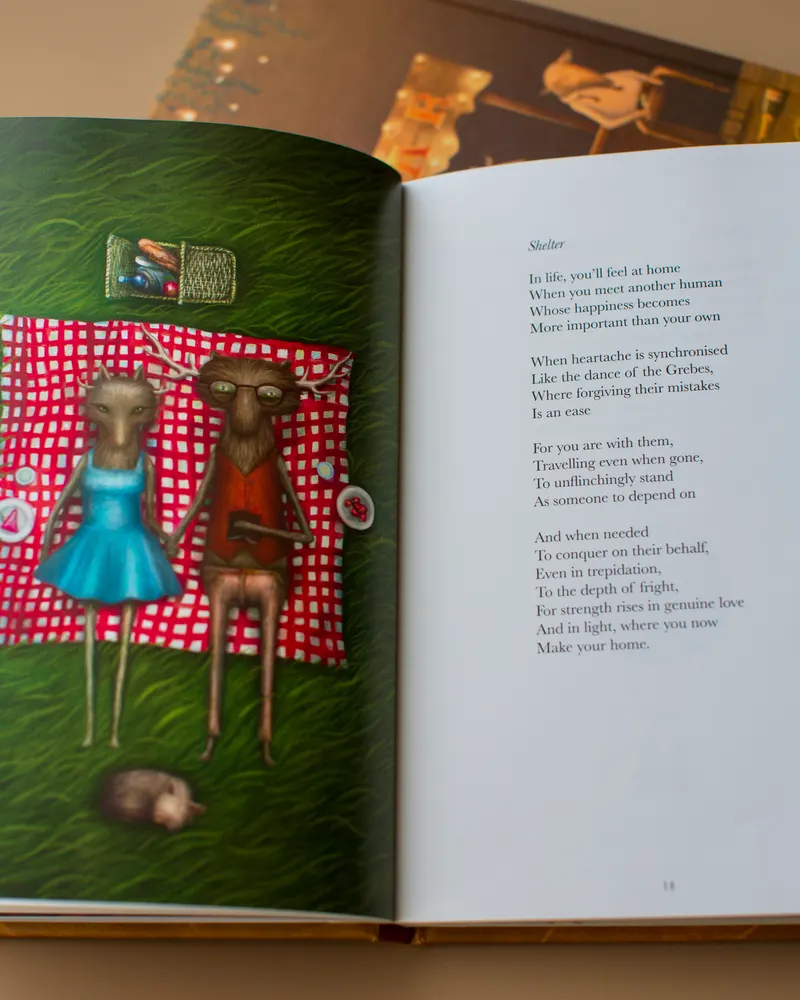
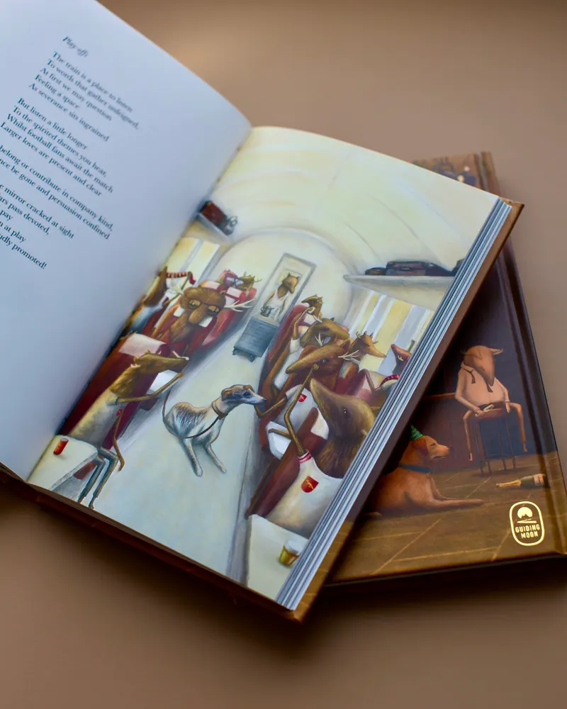
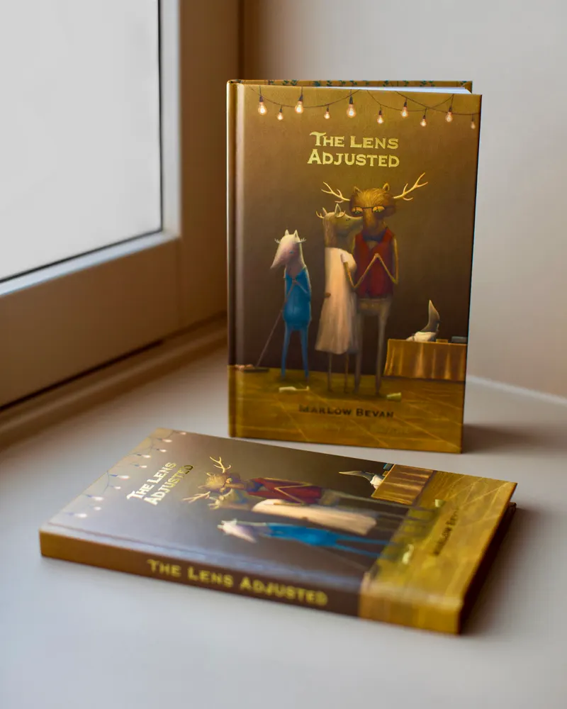

Hardback
Beautifully presented in hardback.
Musician, producer and poet
The Lens Adjusted — an evocative collection of romantic and spiritual poetry exploring life, love and faith through a fresh perspective.


The Lens Adjusted
Written in a graceful, traditional style, the poems invite us to pause and reflect on the things that shape our lives.
Beautifully presented in hardback.
22 full-page colour illustrations, alongside smaller black-and-white illustrations throughout.
Finished with gold foil detailing.
The book is currently available as a limited first edition.
Poetry, illustrated
Danny Boatfield’s playful and imaginative artwork complements the poetry and brings its ideas to life.




Selected imagery


News of the December book launch, future releases, events and updates from Marlow.
Follow along